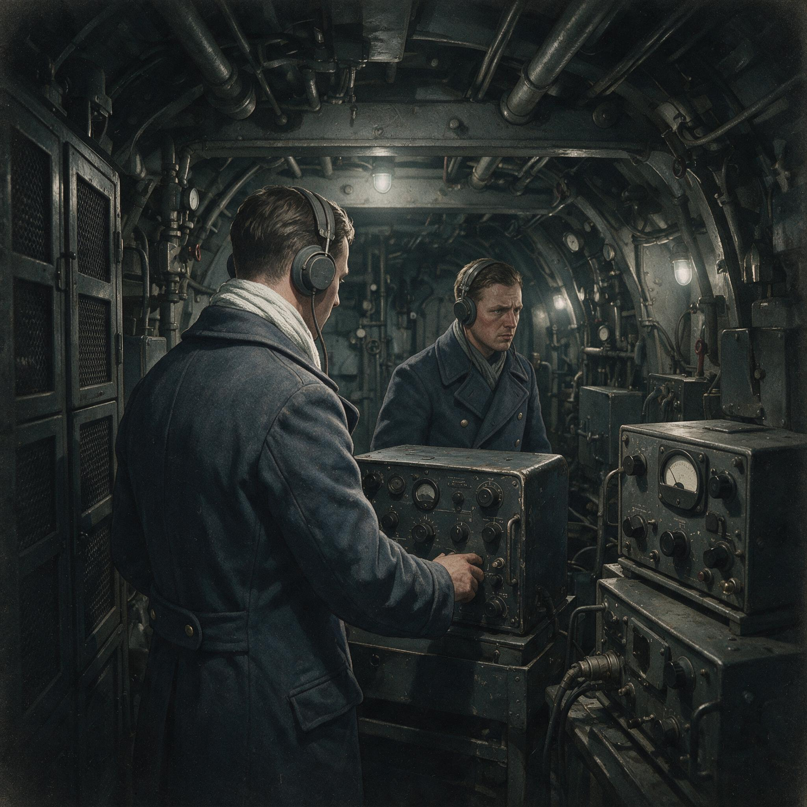

第 11 章
铝箔之幕
把时钟拨回1942年，英国皇家空军作战研究部的一份技术备忘录，在封面页下方标注着“绝密——窗户行动”。翻开扉页，第一栏不是摘要，而是一组手工绘制的偶极子天线方向图。图旁边用工整的斜体字写着计算过程：维尔茨堡火控雷达工作频率约五百六十兆赫，对应波长五十三厘米，半波振子长度取二十六点五厘米。弗莱亚预警雷达频率较低，波长更长，干扰条需按比例放长。
第三栏列出了一架兰开斯特轰炸机的标准携带量：每架可装两千个箔条包，单包重量约两磅，每包内含数千条铝箔。投放间隔按空速和所需干扰幕宽度计算，每分钟六包可产生连贯的虚假回波区。备忘录的最后一页附着一行手写批注：“1942年4月已完成实弹测试，等待使用授权。”
这份备忘录的诞生，与另一项改变战争走向的绝密计划几乎同步。1942年，在芝加哥大学冶金实验室，人类历史上首座人工核反应堆芝加哥1号堆成功实现自持反应。曼哈顿计划在1939年便已小规模进行，后来规模愈来越大，总共雇有13万余人，花费22亿美金（折合2020年的254亿美元），其中逾九成是花在了建造工厂、生产可裂变物质上，只有不到一成用在武器研发生产上。两项计划共享着同一个时代背景：战争已进入需要调动国家全部工业与科学资源进行系统性对抗的阶段。
这份备忘录在保险柜里锁了十五个月。要理解这十五个月的等待，不能只从物理学的角度看箔条。半波振子的反射原理在战前就已写进无线电工程教材。电磁波照射到导体表面时，导体内的自由电子在交变电场驱动下产生感应电流，电流以入射波相同的频率向外辐射电磁波。如果导体的长度恰好是入射波长的一半，导体两端的电流分布会形成驻波谐振，辐射效率达到峰值。
德国物理学家在战前的雷达研究中同样掌握这个原理。1930年代德国通信研究机构曾在试验中发现，从飞机上抛撒金属箔片会在阴极射线管上产生大面积回波。英国的雷达研究机构在1940年也做过类似的室内测量。箔条干扰在物理上没有秘密可言。
秘密在于使用它的决定。1942年的英国面临一个典型的电子战困境：技术已经就绪，但使用技术的代价无法单方面计算。轰炸机司令部急切希望将箔条投入实战。从1942年春开始，皇家空军对德国

城市的夜间空袭规模不断扩大，损失率也在上升。
德国夜间防空体系的核心是一套由弗莱亚预警雷达和维尔茨堡火控雷达组成的拦截链。德国夜间防空体系依赖弗莱亚预警雷达进行远距离探测，发现目标后，数据被传送至引导中心，再由引导中心指挥维尔茨堡火控雷达实施精确跟踪。维尔茨堡的输出数据直接送给高炮指挥仪和夜间战斗机引导员。整条链的速度和精度都依赖雷达信号的质量。
如果能在德国雷达屏幕上制造大面积干扰，这条链就会从源头崩溃。轰炸机司令部的作战研究部门做了推演：致盲弗莱亚和维尔茨堡，德国夜间拦截效率会下降一半以上。推演结果写成报告，连同技术备忘录一起递交到更高的决策层。
战斗机司令部看到了同一份推演，但得出了相反的结论。他们的理由是：箔条干扰在物理上是对称的。你今天向德国雷达撒铝箔，德国人明天就能捡到未燃尽的残片，量出长度，算清波长，然后反过来生产适合英国雷达波段的箔条包。英国本土的夜间防空体系同样依赖雷达，而且这套体系在1940年到1941年的伦敦大轰炸中被证明是生死攸关的防线。
战斗机司令部的地面控制拦截雷达把夜间战斗机引导到目标附近，机载拦截雷达完成最后几百米的捕捉和射击。如果德国轰炸机也撒下箔条，英国夜间战斗机的拦截效率同样会直线下降。德国空军在1942年仍然有能力组织对英国城市的夜间空袭，只是规模不如1940年。战斗机司令部认为，你不能为了轰炸德国城市而敞开本土城市的大门。
两种立场都有数据支撑。轰炸机司令部拿出每月损失统计：德国夜间战斗机和高炮每个月击落多少架轰炸机，空勤人员伤亡率如何上升。战斗机司令部拿出德国轰炸机部队的规模评估：德国在东线消耗了大量空中力量，但西部仍保留着相当数量的双引擎轰炸机，只要条件允许，这些飞机可以重新集结对英国发动夜袭。
双方的数据都属实，但计算方式不同。轰炸机司令部算的是当下正在流的血，战斗机司令部算的是未来可能流的血。两个司令部的制度位置强化了各自的立场：一个负责进攻，一个负责防守。这个僵局在1942年反复胶着。
技术研究部门继续完善箔条的制造工艺和投放方案，每一条测试数据都证明干扰效果显著。但决定权不在技术部门手里。轰炸机司令部司令阿瑟·哈里斯不满于拖延，战斗机司令部司令舒尔托·道格拉斯拒绝让步。两个司令部在参谋长委员会上的争论被反复记录、传阅、搁置。文件在几个办公室之间循环，每次循环都加上新的评估附录，但没有一份附录能解决核心问题：谁来判断风险是否可承受。
这种跨部门决策的僵局，在更宏大的战略项目中同样存在。1943年，英美两国在核武器研发计划中扮演的角色与1941年下半年那时相比几乎完全反过来了；该年1月，科南特告知英国说英方除了在几个特殊地区之外无权再接触任何核武器相关的信息。
科南特和布什还对英方称这是“上级的命令”。英国对丘吉尔和罗斯福所定的协议的作废感到很震惊，但加拿大国家研究委员会委员长C·J·麦肯兹则觉得这还在意料之中，写道“我总觉得和美国人比起来，英国人把自己对原子弹的贡献看得太重了些。”
丘吉尔介入之前，联合作战情报部门拿到了一份新的评估任务：测算德国夜间防空体系对雷达的依赖程度，以及德国对英国本土进行报复性夜袭的实际能力。这份评估动用了多个情报来源，包括截获的德国雷达通信、对德国夜间战斗机部队编制的情报分析、对德国轰炸机部队东移程度的计算。
评估结论在1943年初浮出水面：德国夜间防空几乎完全依赖雷达引导。从预警到跟踪到高炮指挥，整条链都挂在弗莱亚和维尔茨堡的信号上。如果这两类雷达同时失效，德国地面防空在夜间将无法有效组织。
对德国报复能力的判断也变得更具体：德国轰炸机部队在1943年的可用规模已显著下降，东线和地中海消耗了大量飞机和机组，剩余部队难以在短期内对英国发动与1940年规模相当的夜间空袭。评估报告的措辞谨慎，但结论清楚：时间窗口存在，风险可控。
这个判断改变了决策的计算基础。它没有让战斗机司令部的担忧消失，但它提供了足够的证据，让丘吉尔可以拍板。1943年7月，批准文件签字，箔条包的投放排进了轰炸机司令部的作战计划。从备忘录写成到授权下达，十五个月过去了。
1943年7月24日深夜，汉堡上空的气温偏高，空气干燥。七百九十一架英国轰炸机的机群分成若干波次进入目标空域。领航飞机在预定空域投放第一批铝箔条包。包在空中裂开，数千条铝箔散入气流，在轰炸机身后形成一道逐渐扩散的金属幕。后续投弹波次按固定间隔持续投放，干扰幕在汉堡周边空域绵延数公里。每一条铝箔都精确裁切，针对德国雷达的波段产生最大反射。德国地面雷达站几乎在同一瞬间失去目标画面。
弗莱亚预警雷达的屏幕上，原本代表轰炸机群的移动亮点被一片快速扩大的亮斑取代。操作员转动天线方位旋钮，亮斑随天线指向移动，这表明它不是一个固定干扰源，而是散布在空中的大量反射体。
维尔茨堡火控雷达的情况更糟。维尔茨堡的波束窄，需要精确跟踪单个目标。当波束扫过箔条区时，接收机里涌入的反射信号变得密集而无序，距离和方位显示反复跳动。操作员无法锁定任何一架轰炸机，跟踪记录变成一条杂乱的波形。
高炮指挥所从雷达站收到的目标参数突然中断。炮瞄雷达失去跟踪数据，高炮手只能靠探照灯和目视寻找目标。
探照灯在箔条区里找不到飞机，光束在云层和铝箔条之间反射，反而制造出更多的虚假光点。夜间战斗机引导员从地面雷达获得的航向指令变得混乱，拦截编队无法组成有效的攻击队形。汉堡的防空体系在那个夜晚回到了雷达出现之前的状态：靠耳朵、靠火光、靠运气。轰炸机群在箔条幕的掩护下顺利进入目标区。
历史大气数据显示汉堡当晚天气炎热干燥，连续多日没有降水，屋顶的木质结构含水率极低。高爆炸弹和燃烧弹混合装载的投弹方案在这种条件下极为致命。高爆弹先炸开建筑外壳，燃烧弹在瓦砾和暴露的木质结构上引发火焰。火点在市中心密集分布，很快越过了分立的建筑火灾阶段，合并成一场在气象学上显著的城市燃烧现象。狂风吹过火区的街道，将氧气源源不断吸入，地面温度在几个小时内升到不可触及的程度。
返航数据统计出来：七百九十一架出击，被击落十二架，损失率远低于同期其他夜间空袭。作战研究部将这次行动标记为“窗户”行动的首战。数据在轰炸机司令部内部传阅，箔条的有效性以损失率的形式固定下来。汉堡的警报和战损记录则是另一组数字：建筑被毁数量、平民伤亡统计、消防能力的全面过载。
但汉堡空袭不是故事的结尾，而是另一条曲线的起点。空袭后两天之内，德国空军信号部队就开始组织对箔条的应对。
他们的反应速度超出英方预期——不是因为英国低估了德国的工程技术，而是因为德国的制度在危机时刻表现出了某种集中反应能力。信号部队从汉堡地面雷达站收走了一批维尔茨堡雷达的接收机记录。这些记录记录了箔条干扰期间的脉冲波形、杂波幅度和频谱分布。工程师在审读波形时发现了一个规律：箔条的反射信号在频率上相当稳定，而真实轰炸机的回波会因飞机相对于雷达站的径向运动产生微弱的多普勒频移。这个频移脉冲在频谱上偏离中心频率，偏离量与飞机的速度分量成正比。箔条在风中飘移的速度慢、方向不定，频移远小于飞机。
这个发现催生了“光轮”系统。技术人员计划在维尔茨堡雷达的接收电路里加一个多普勒滤波器，只让产生频移的回波通过显示，把频率稳定的箔条反射过滤掉。测试在一座地面雷达站展开。
工程师尝试了不同的频移阈值：阈值设得太高，大部分轰炸机回波也会被滤掉；阈值设得太低，很多箔条杂波仍然会漏进屏幕。
早期测试结果的描述提到，操作员需要在真实空袭中反复调整阈值旋钮，在实际目标回波和残余干扰之间找平衡点。“光轮”没有立刻解决所有问题。多普勒区分只能处理径向运动的频率偏移，对横向飞行的目标灵敏度会下降。箔条云在强风中也可能产生足够的整体飘移速度，产生类似频移的信号。夜间战斗机仍然难以在干扰条件下稳定跟踪。
但“光轮”的出现向双方传递了一个更重要的信号：箔条干扰的有效期是有限的。只要工程力量组织起来，把对抗手段送到前线，原来的干扰优势就会被逐渐蚕食。这恰恰是电子对抗螺旋的本质。一次成功的干扰制造的不是永久的致盲，而是一个时间窗口。窗口的长度取决于对手的制度反应时间：从发现干扰到确认技术原理、从实验室测试到前线改装、从操作员培训到新条令下达。英国在1942年到1943年之间消耗了十五个月在决策拖延上，消耗的不是技术优势，而是时间窗口。
德国在汉堡空袭后七天之内完成初步方案，几周内把“光轮”试验设备装上雷达站。
这个速度暴露了一个对比：英国的制度在技术成熟后迟迟不敢使用，德国制度在遭遇重创后迅速启动修复。但这不等于德国制度的综合效能更高。单体设备的快速改装不能代替整个防空体系的重新整合。“光轮”能恢复维尔茨堡雷达的部分跟踪能力，但德国夜间防空的问题从来不只是雷达站里少了一个滤波器。弗莱亚预警雷达、维尔茨堡跟踪雷达、高炮指挥仪、夜间战斗机的地面引导中心，这些环节分属不同军种和技术体系。
预警雷达的干扰问题可能和跟踪雷达不同，高炮指挥所收到的目标参数格式与夜间战斗机的引导数据也不一样。“光轮”装在了部分维尔茨堡雷达上，但弗莱亚雷达的箔条干扰问题仍没有令人满意的方案。预警层一旦仍然被干扰，整个拦截链还是无法恢复完整运转。
这里可以清楚地看见技术×制度的乘积。物理原理双方共享，波长和半波振子的计算写在同一类教材里。制造成本也都不高——铝箔条比真空管便宜无数倍。真正拉开效果差距的，是谁能在什么时候把这项技术嵌入到作战链条中。
这种制度整合的差异，在更高级别的战略决策中体现得更为深刻。1944年7月1日，格罗夫斯终于成功将曼哈顿计划优先度调整为AA-1级。格罗夫斯后来说，“在华府你会渐渐明白‘高优先级’一词的含义。罗斯福政府批的每个议案都会被赋予高优先级，一两周之后又被另一个高优先级议案取而代之。”
英国赢了第一轮，不是因为科学家算得更准，而是因为决策层终于在风险计算中跨越了对称性恐惧。德国输了第一轮，不是因为雷达性能弱，而是因为防空体制在遭遇突发干扰时缺乏跨环节的协调恢复能力。
但第一轮的结果也决定了第二轮的方向。德国人把多普勒滤波器装上雷达站之后，铝箔幕的干扰效果开始递减。每一台新装的“光轮”设备都在挤压箔条的有效空间。英国轰炸机部队不可能靠同一卷铝箔一直压制下去。作战研究部在1943年秋天的评估里已经注意到，德国雷达屏幕上重新出现了可辨认的目标亮点。亮点的辨识度不高，跟踪仍不稳定，但趋势是明确的：对手正在恢复视力。
这就把压力推向了下一级。箔条干扰的窗口在汉堡空袭那个夜晚完全敞开，随后一点点关闭。盟军若想继续在夜间轰炸中保持低损失率，就必须准备层次更复杂的欺骗手段。单靠铝箔条已经不够了，因为对手的滤波器会把频率稳定的回波过滤掉。
在汉堡空袭后的最初四十八小时里，德国空军信号部队的反应不是从实验室开始的，而是从废墟里开始的。技术人员从被击落的英国轰炸机残骸中找到了未燃尽的铝箔条。这些铝箔条被送到柏林附近的一座信号测试中心，工程师用千分尺量出长度，用频谱分析仪测出反射峰值对应的频率。
测量结果迅速确认：这些箔条被精确裁切为二十六点五厘米，恰好对应维尔茨堡雷达的五十三厘米波长的一半。同一批残骸中还有更长的箔条，对应弗莱亚雷达的二点四米波长。英国人的计算没有留下任何误差余地。这个发现本身并不令德国工程师惊讶——他们自己在战前就在实验室里验证过半波振子的反射特性。
令他们震动的是另一个事实：英国人不仅完成了工程计算，还把它变成了可以大规模生产、标准化投放的作战手段。每一架兰开斯特轰炸机携带的两千个箔条包，每一个包里的数千条铝箔，都按照统一的规格裁切、包装、配重。这不是实验室里的原理演示，这是一条完整的工业链条在支撑电子欺骗。
信号部队在收到残骸分析报告的同一天启动了应急程序。这个程序的效率在和平时期是不可想象的。通常情况下，一项新技术的原型机从设计到测试需要数周，从测试到列装需要数月。
但汉堡空袭后的德国防空体系处于一种制度性的恐慌状态。恐慌在这里不是一个心理词汇，而是一个组织行为学的事实：维尔茨堡雷达的操作员在空袭当晚的报告里反复使用同一个词——“雪盲”。这个词从战术报告传到了团级指挥部，从团级指挥部传到了空军信号部队司令部。每一个层级都理解它的含义：整个汉堡防空区在空袭期间等于没有雷达。对于一个已经把雷达嵌入拦截链每一个环节的防空体系来说，“没有雷达”意味着退回到1939年之前的状态。
这种恐慌绕过了平时层层审批的研发流程。信号部队司令部直接下令：所有可用的工程师集中到多普勒区分方案上，测试设备优先配给，前线雷达站配合试验。
“光轮”系统的早期测试记录保留了下来。这些记录不是正式的技术报告，而是工程师在测试现场手写的调试日志。日志的第一页标注着日期：1943年7月26日，汉堡空袭后第三天。测试在一座地面雷达站展开，工程师将一台改装过的维尔茨堡雷达接收机接入天线。改装的核心是一个可调频移滤波器，滤波器的阈值旋钮被临时标记了刻度，从零到最大值分成十档。测试过程中，一架德国夜间战斗机从附近机场起飞，按照预定航线在雷达站周围飞行，模拟轰炸机的径向运动。地面人员同时在雷达波束覆盖的空域投放箔条包，制造干扰背景。
下一步要制造的假信号需要看起来更像真的：它必须模拟飞机的多普勒频移、移动速度、编队规模，必须在不同的雷达波段上同步呈现。这不是增加几卷箔条长度能解决的，它需要把干扰升级为战役级的电子欺骗——不是简单地填满屏幕，而是在屏幕上画出一支不存在的部队。1943年7月24日那个夜晚的深层后果在这里显现出来。
汉堡空袭证明了电子致盲可以扭转一场战役的交换比，也证明了致盲措施一旦暴露，对手就会开始在同一个物理框架内寻找复明的方法。电子战的对抗螺旋从此不再只是谁发明了最新硬件，而是谁能在对方完成反制之前做两件事：利用当前窗口取得作战结果，同时准备好下一轮干扰手段，在窗口关闭的那一刻无缝衔接到新的欺骗层。
英国在1942年浪费了大量时间在内部争论上，所以在1943年7月才打开窗口；德国在1943年7月底迅速响应压缩了窗口；现在压力回到了英国这边。新干扰手段的研发周期和决策周期会决定下一个窗口什么时候出现。汉堡的大火在几天后熄灭。
城市的统计数字进入了战争档案：建筑损毁比例、人口伤亡、工业产出中断的估算。英方的作战报告归档了损失率和轰炸精度。这些数字对历史学家意味着结果，对当时的作战计划人员意味着输入。但电子战的历史不会停在统计表上。它在雷达屏幕变白的那一瞬间裂开了一个新空间。那一瞬间之后的每一天，德国的工程师都在努力让屏幕重新变暗，让亮点重新显现。而英国和后来的盟军必须赶在他们成功之前，找到另一种让屏幕撒谎的方法。铝箔之幕不是终点，它只是一场漫长欺骗的第一幕。